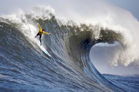

SURFER
Q/A
kind of photos are good to encode using JPEG?
Photos with many colors and gradients, like photographs, work best as JPEGs.
kind of photos are good to encode using GIF?
Images with few colors, like logos or simple graphics, are good as GIFs.
unique about the PNG format?
PNG files can have see-through parts and don't lose any picture quality when you save them.
resize your photo to the size it should be displayed?
Resize photos by changing their pixel dimensions in photo editing software before using them.
Why should you resize photos using photo editing software instead of resizing it using CSS?
When you make an image smaller in editing software, the file becomes smaller too. This helps web pages load faster. But when you use CSS to resize an image, it only changes how big it looks on the screen. The file stays the same size.